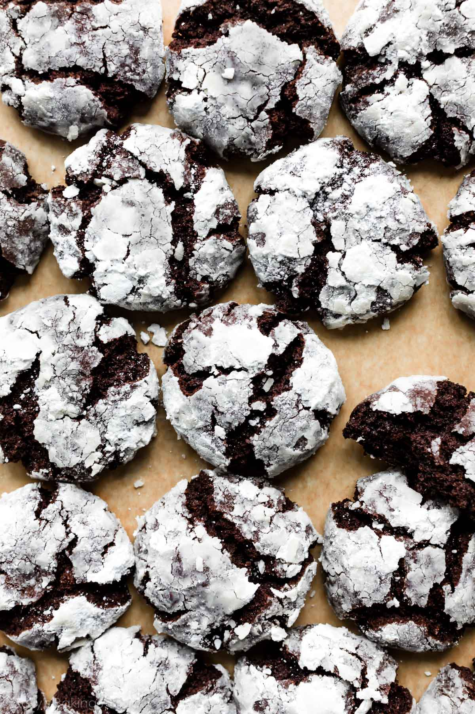

Chocolate Crinkles

Well this is just a sore throat waiting to happen
A chewy chocolate cookie powdered with some confectioner's sugar
Ingredients
- 2 cups white sugar
- 1 cup unsweetened cocoa powder
- 1/2 cup vegetable oil
- 4 large eggs
- 2 teaspoons vanilla extract
- 2 cups all-purpose flour
- 2 teaspoons baking powder
- 1/2 teaspoon salt
- 1/2 cup confectioner's sugar
Directions
- Mix sugar, cocoa, and oil together in a medium bowl. Beat in eggs, one at a time, until combined. Stir in vanilla.
- Combine flour, baking powder, and salt in another bowl. Gradually stir dry ingredients into the wet ingredients until thoroughly mixed. Cover dough and refrigerator for at least 4 hours
- Preheat the oven to 350 degrees F (175 degrees C). Line two baking sheets with parchment paper.
- Roll or scoop chilled dough into 1-inch balls. Coat each ball in confectioners' sugar and place 1 inch apart on the prepared cookie sheets.
- Bake in the preheated oven for 10 to 12 minutes. Let stand on the cookie sheet for a few minutes before transferring to wire racks to cool.
Check out original recipe here
now get the fuck outta here